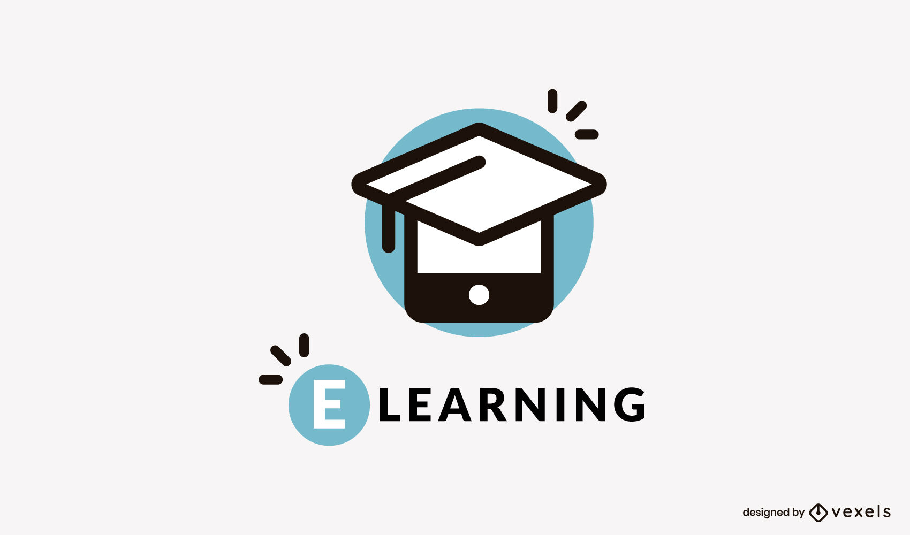

Virtual e- learning is a system designed to help students gain access and acquire knowledge in any university of their choice. It can include: Enhance face –to- face instruction (on campus, in class use of computer and the World Wide Web (WWW), enhanced distance education (on or off campus) individuals and group learning with both print and computer-based materials instruction entirely on- line (individual and group learning) because of this mix virtual classroom and text based e- learning knowledge is moving towards every student being an e- learner at last for part of their study, whether through learning materials, e-mail for contacting teachers/ tutors or any one of their myriad other e-learning applications.
Online learning results to learning and other supportive resources that are available through a computer and it includes computer based training, computer based instruction and technology. The e-learning system use text messages to deliver information and data. Student or e-learners will be in their computer receiving lectures as if they are in classroom. This has gone a long way helping e-learners to acquire degree in the institution they have never seen.